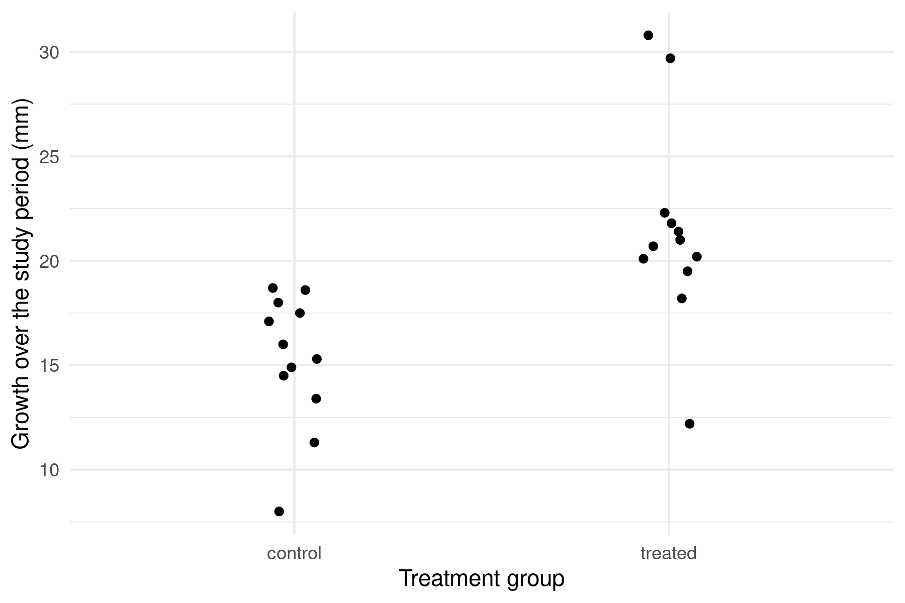
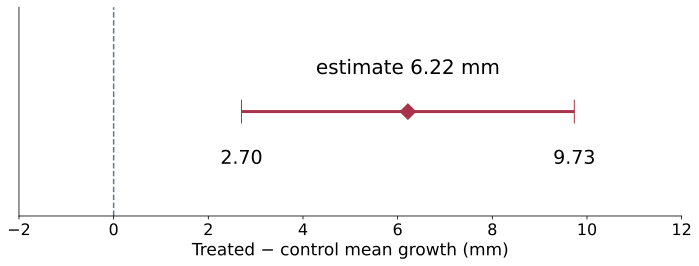
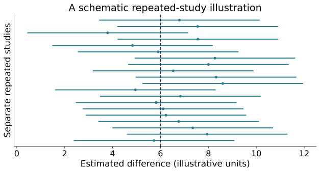
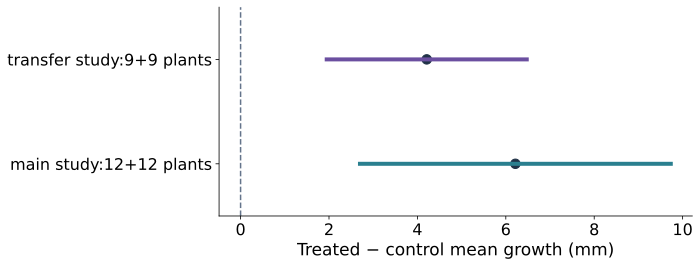

On Day 16 the treated seedlings grew 6.22 mm more on average than the controls. But a second experiment with 24 new seedlings would give a different number. How much should we trust 6.22 mm? Almost every results section you will read or write answers this with three numbers: an estimate, a 95% confidence interval, and a p-value.
The estimate is the observed treated-minus-control difference in means, with units and a direction.
The confidence interval is a range of population differences compatible with the data, under the model.
The p-value asks how surprising the data would be if the true means were equal.
Welch’s test (t.test in R) produces all three for two independent groups, without assuming equal spread.
This is a reading and writing day: we do not derive the t formula. We learn to run the test, read every number, and write a result sentence that is correct.
The problem: groups overlap
Treated mean 21.49 mm, control mean 15.28 mm, 12 plants each.
Difference: 6.22 mm (treated − control).
But the dots overlap: several control plants grew more than several treated plants.
Plants vary. A different random set of 24 would give a different difference.
Question: is 6.22 mm a stable feature of the treatment, or could chance variation between plants produce a gap like this?

The two seedling groups overlap despite a higher treated mean.
Check the design before any test
Welch’s test fits this study because:
Independent units: each plant is its own unit, randomly allocated to a group.
One value per plant: growth = final − initial, computed once.
Unequal spread is allowed: treated SD 4.87 mm vs control SD 3.19 mm is fine for Welch.
A test cannot repair the design:
Repeated readings of the same plant are not extra plants (Day 14).
Before/after on the same plant needs a paired analysis (Day 18).
In very small samples, look at the dots for strong skew or a single dominating value; keep genuine unusual values and ask for advice if the simple model looks unsuitable.
Run the comparison in the direction we named
library(readr)library(dplyr)seedlings <-read_csv("data/seedlings.csv", show_col_types =FALSE) |>mutate(growth_mm = final_mm - initial_mm)treated <-filter(seedlings, treatment =="treated")$growth_mmcontrol <-filter(seedlings, treatment =="control")$growth_mmcomparison <-t.test(treated, control,var.equal =FALSE, # Welch: spreads may differalternative ="two.sided", # a difference in either direction countsconf.level =0.95)comparison
The first vector minus the second: here treated − control. The order of arguments sets the sign.
var.equal = FALSE is already the default; writing it makes the method visible to a reader.
Save the result as an object so you can extract numbers: comparison$conf.int, comparison$p.value.
Reading the output
R prints
Value
Units
Meaning
mean of x, mean of y
21.49, 15.28
mm
Group means (treated, control)
difference of means
6.22
mm
The estimate, treated − control
95 percent confidence interval
2.70 to 9.73
mm
Uncertainty in the mean difference
t
3.70
none
Estimate divided by its standard error
df
19.0
none
Welch’s approximate degrees of freedom
p-value
0.0015
none
See the next slides
Sample sizes are not printed: get them from your data (12 and 12).
The interval and estimate carry mm; t, df and p have no unit.
The estimate and its confidence interval

The estimate 6.22 mm and 95 percent confidence interval 2.70–9.73 mm are shown against zero difference.
Estimate 6.22 mm; 95% CI 2.70 to 9.73 mm.
Zero marks “no difference between population means”. This interval lies entirely above zero.
The interval is about the mean difference, not about individual plants: it does not contain 95% of plants.
What “95%” refers to
Imagine repeating the whole experiment many times, each time computing a new interval.
The true difference is fixed. The intervals move from study to study.
A 95% procedure covers the truth in about 95% of repeats — under its assumptions.
We do not know whether our one interval is one of the hits.

Illustrative repeated studies produce intervals around separate estimates; the true difference is fixed.
Spread among plants is not the difference interval
Individual measurements and the estimated mean-difference interval answer different questions.
Left: individual growth values. Spread here is natural variation between plants (SD).
Right: uncertainty in the treated − control mean difference (CI).
Before reading any error bar, ask: which quantity, and on which axis? A figure caption must say.
What the p-value conditions on
Definition:if the two population means were equal (and the assumptions held), how often would a statistic be at least this extreme, in either direction?
Here p ≈ 0.0015: rarely.
The shaded tails lie beyond the observed |t| = 3.70.
It is not:
the probability that the null hypothesis is true;
the probability that the treatment works;
a measure of how large the effect is.
The Welch equal-means reference distribution shades both tails beyond the observed statistic magnitude.
Direction is a choice; reversing it flips the interval
Keep the direction you stated in advance as the reported result; save the check in a separate object.
The same comparison in opposite directions produces reflected confidence intervals.
What makes an interval wider or narrower?
The 90%, 95%, and 99% intervals use identical observations but different widths.
Confidence level: 90% → 3.31 to 9.12; 99% → 1.41 to 11.02 mm. More coverage requires a wider interval. Keep 95% as the stated analysis.

Main and transfer study intervals differ in estimate and width while also having different spreads and sample sizes.
Data: width depends on sample size and spread together. The transfer study (9 per group) has a narrower interval than the main study (12 per group) because its plants vary less.
When the interval includes zero
An illustrative 2 mm difference has a 95% interval from −1 to 5 mm, covering zero and both directions.
Illustrative small study: estimate 2 mm, 95% CI −1 to 5 mm.
Both a small harmful and a moderate helpful effect remain compatible with the data.
Including zero is not proof of no effect. “Not significant” means inconclusive here, not equal.
Write a result, not a threshold label
Good: “Treated seedlings grew on average 6.22 mm more than controls (95% CI 2.70 to 9.73 mm; Welch two-sided test, p ≈ 0.0015; 12 plants per group).”
Then one sentence on biological size and one on design limits.
Misreading
Better
“The null hypothesis has probability 0.0015.”
Under equal means and the assumptions, a statistic this extreme is rare.
“The result is significant.” (alone)
Give estimate, units, interval and p.
“p is small, so the effect is large.”
Size comes from the estimate and interval, not from p.
“p > 0.05, so there is no difference.”
The data are inconclusive about direction.
Worked example: a second class’s study
transfer <-read_csv("data/seedlings-transfer.csv", show_col_types =FALSE) |>mutate(growth_mm = final_mm - initial_mm)new_treated <- transfer |>filter(treatment =="treated") |>pull(growth_mm)new_control <- transfer |>filter(treatment =="control") |>pull(growth_mm)transfer_test <-t.test(new_treated, new_control)transfer_test
Quantity
Value
Plants per group
9 and 9
Estimate (treated − control)
4.21 mm
95% CI
1.95 to 6.47 mm
Welch p-value
0.0012
“Treated seedlings grew 4.21 mm more on average (95% CI 1.95–6.47 mm; Welch, p ≈ 0.0012; 9 per group).”
Summary
Concept
Key fact
Estimate
Treated − control difference of means, in mm; direction set by argument order
Welch’s test
Two independent groups; spreads may differ; t.test(x, y)
Design first
Independence and one value per unit; a test cannot repair design
95% CI
Range of mean differences compatible with the data; procedure covers the truth in ~95% of repeats
CI vs SD
CI is uncertainty in the mean difference, not spread of plants
p-value
How extreme the data would be if means were equal — not P(null), not effect size
CI includes 0
Inconclusive about direction, not proof of equality
Reporting
Estimate + units + CI + test + p + n, then size and limits in words
Next (Day 18, paired observations): when each plant is measured twice, the two readings are not independent, and the analysis must keep each pair together.
Now:open the Day 17 exercises. Add the method, estimate, interval, sample sizes and p-value to comparison.Rmd, keep the individual-point plot, restart R, and render.